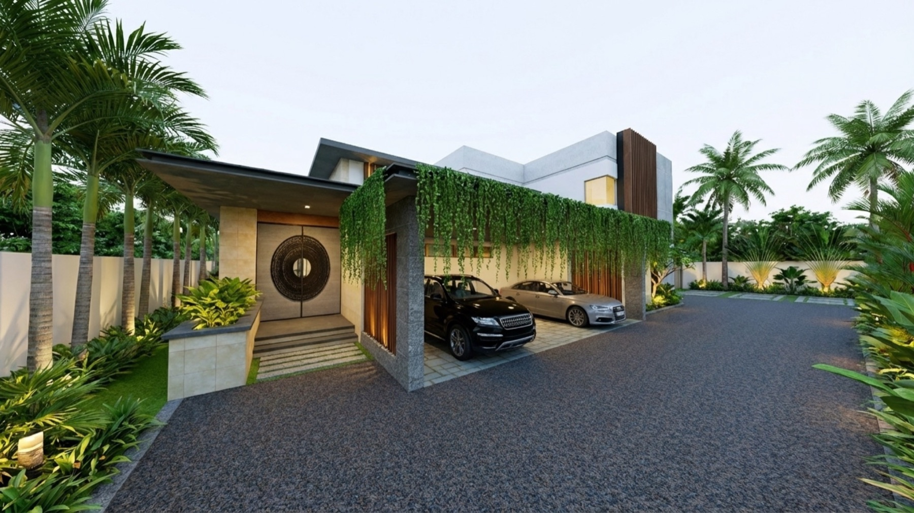
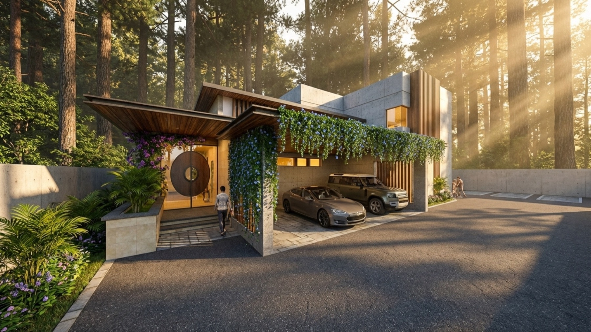
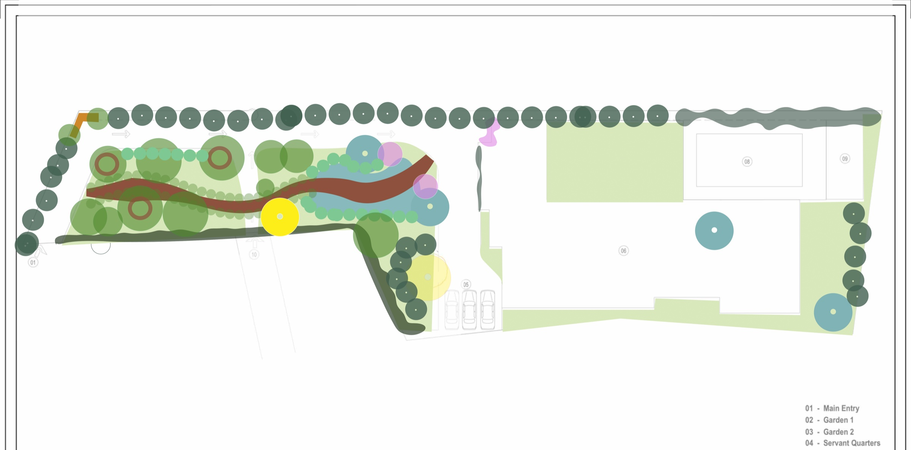
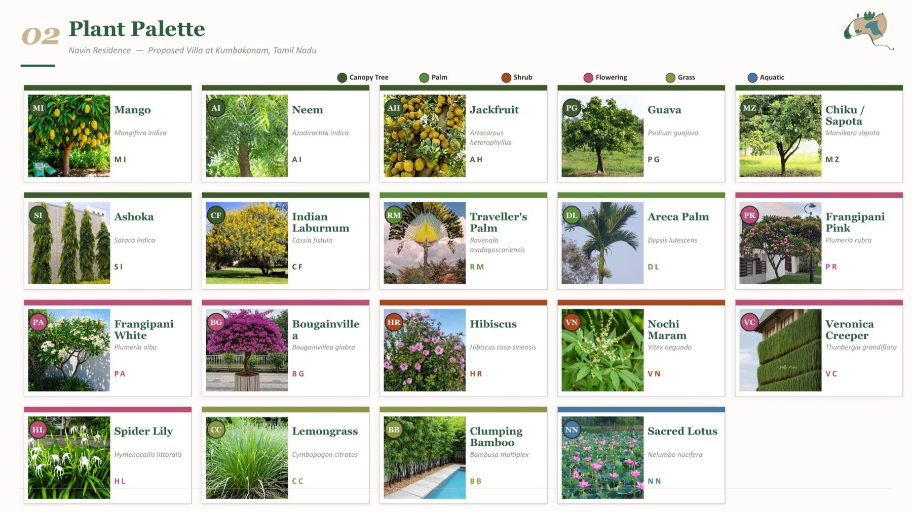
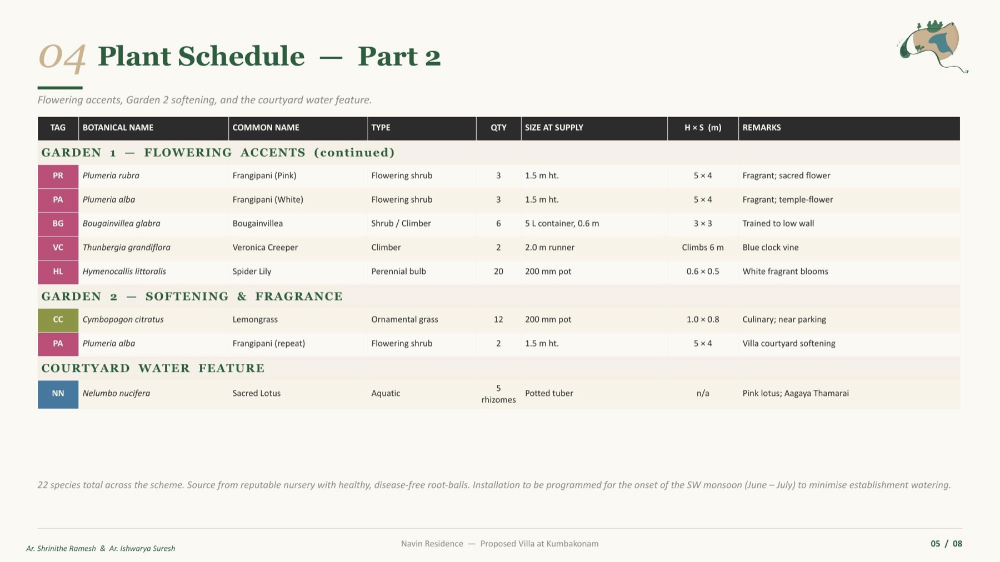
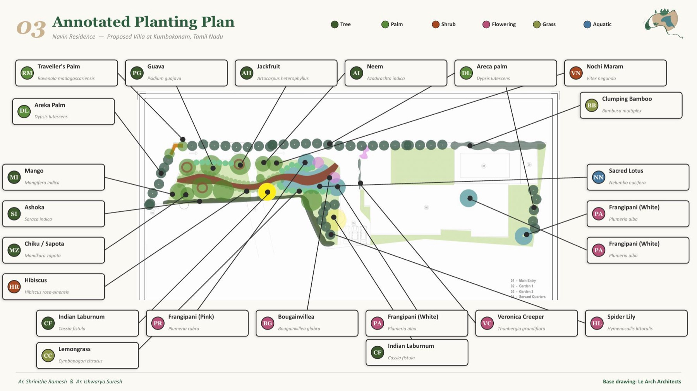
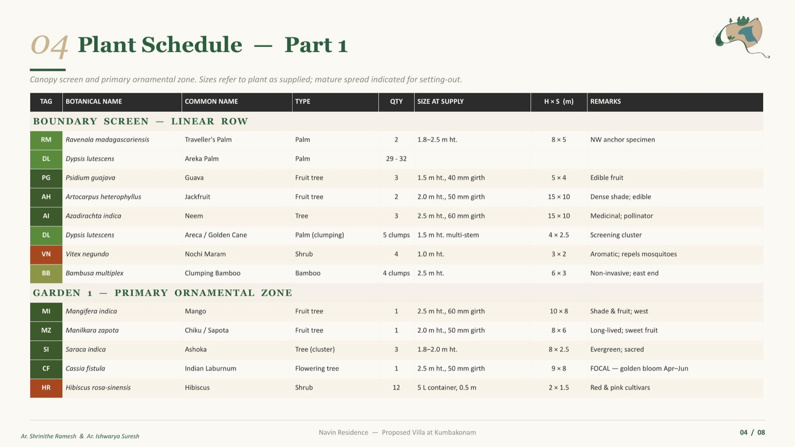

Navin Residence
Location
Kumbakonam, Tamil Nadu
Type
Private residence
Scope
Landscape & Planting

A Bali-inspired tropical garden for a home in Kumbakonam.
The Navin family's home is wrapped in a lush, Bali-inspired tropical landscape: layered planting and a sequence of water-led moments that make the garden feel cool, shaded and immersive to move through. The design reads as a slow, meandering experience rather than a single open lawn.
It is organised zone by zone. A Petrea volubilis climber marks the entry over textured stone paving, and a Veronica curtain creeper forms a living green screen along the car park. Beyond, Garden 1 builds a canopy of coconut and areca palm over bold foliage of monstera and alocasia, threaded by a pergola swing path. Garden 2 turns to water, with lotus and water lilies edged in cyperus, thalia and canna.
At the courtyard, an Adonidia and Ravenala focal planting sits over a soft Zoysia lawn, while the pool is held by a clean deck line and a lush buffer of areca, banana and groundcovers. A Polyalthia and conifer boundary screens the whole plot for privacy.
Because the garden leans on water, it carries a considered mosquito-management strategy, from moving-water detailing to repellent planting of lemongrass, citronella and tulsi, so the spaces stay comfortable to use. Everything is resolved down to a full planting schedule, a seasonal-performance study and an indicative cost sheet.



Planting scheme
The garden is documented as a full planting scheme, from the species palette and zone-by-zone schedule to a seasonal-performance study.



